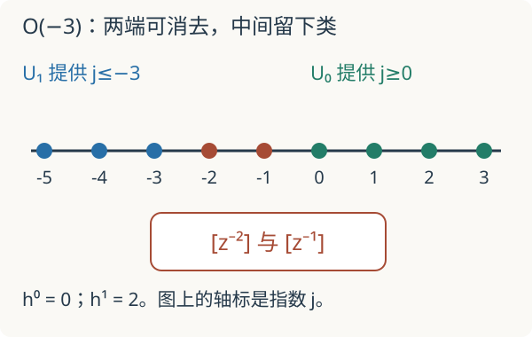

本页目录
基础衔接 06 · Čech 上同调：在射影直线上算出粘合障碍
先修：局部化、链复形、层与粘合。目标：明确写出覆盖、系数层与微分，然后算出 \(H^0\) 和 \(H^1\)。这是经典代数几何的计算基础，供后续模空间与几何 Langlands 阅读使用。
1. 不是每一种拼不起来都叫上同调
上一讲遇到过不相容的函数，但没有把它们统称为一个上同调类。本讲补上缺少的结构。我们研究复数域上的代数射影直线 \(X=\mathbb P^1_{\mathbb C}\)，使用正则函数，不用任意连续函数或任意全纯函数。
齐次坐标 \([X_0:X_1]\) 把非零向量按非零倍数等同。取两个开集：\(U_0=\{X_0\ne0\}\)，坐标 \(z=X_1/X_0\)；\(U_1=\{X_1\ne0\}\)，坐标 \(w=X_0/X_1\)。各自是一条仿射直线，交集满足 \(w=1/z\)，其函数环为 Laurent 多项式环 \(\mathbb C[z,z^{-1}]\)。Laurent 多项式只有有限个非零系数，不是无限 Laurent 级数。
2. 把线丛约定写成一条能代入的等式
对任意整数 \(k\)，在两个开集上选形式基 \(e_0,e_1\)，并在交集规定
这定义扭曲层 \(\mathcal O(k)\) 的局部平凡化约定。局部截面分别写成 \(f_0(z)e_0\) 与 \(f_1(w)e_1\)，其中 \(f_0,f_1\) 为多项式。能粘合的条件是
注意是基向量满足 \(e_1=z^ke_0\)；截面系数的变换须从等式推出。若把二者混用，就会把 \(\mathcal O(k)\) 与 \(\mathcal O(-k)\) 的答案颠倒。
3. 从重叠差构造上链复形
相对这两个开集的 Čech 上链为
其中第二个分量记录 \(f_1(1/z)\)，交集统一用 \(e_0\) 表示。微分固定为
采用严格递增指标的归一化 Čech 复形，两个开集没有三元指标项，因此 \(C^2=0\)。于是
这个商作为向量空间来取；分母是两个子空间之和，不是在要求它为 Laurent 环的理想。每个交集截面都是 1-闭上链，而改变两边局部数据只能给它增加 \(\delta\) 的像。剩下的类才是这次指定计算中的障碍。
这里 Čech 答案确实等于层上同调：\(X\) 分离，两个开集及交集都仿射，\(\mathcal O(k)\) 为拟凝聚层，仿射上的高次上同调消失。我们引用这个标准定理，暂不证明。对任意覆盖、任意层不能自动作同样识别。
4. 看指数，就能完成整个计算
第一块 \(\mathbb C[z]\) 包含所有指数 \(j\ge0\)；第二块 \(z^k\mathbb C[z^{-1}]\) 包含所有 \(j\le k\)。
先算 \(H^0\)。粘合需要同一个 Laurent 多项式同时属于这两块，所以指数满足 \(0\le j\le k\)。每个允许的单项式决定唯一的一对局部截面。故
再算 \(H^1\)。所有属于任一块的单项式在商中消失，留下的指数满足 \(k<j<0\)，故
单项式线性无关保证没有隐藏的抵消。维数公式不是有限截断猜测：每个 Laurent 多项式本来就是有限和，未被两端覆盖的指数完整列出了所有剩余基。

取 \(k=-3\)：\(H^0=0\)，\(H^1\) 有基 \([z^{-2}],[z^{-1}]\)。若交集数据
前后两端可由局部数据消去，余类为 \(3[z^{-2}]+5[z^{-1}]\)，非零。取 \(k=-1\) 时两端覆盖全部整数，两个同调都为零。取 \(k=2\) 时全局截面有基 \(1,z,z^2\)，但 \(H^1=0\)。没有全局非零截面与存在非零一次上同调不是同一命题。
5. 这些数字如何进入研究问题
本例还直接给出 Euler 特征 \(h^0-h^1=k+1\)，这是射影直线上的 Riemann–Roch 特例。我们没有证明任意曲线的 Riemann–Roch，也没有建立一般的 Serre 对偶。
一个更具体的后续用途是扩张：对线丛 \(L,M\)，标准识别 \(\operatorname{Ext}^1(L,M)\cong H^1(M\otimes L^{-1})\) 将短正合列 \(0\to M\to E\to L\to0\) 的扩张类送入一次上同调。取 \(L=\mathcal O,M=\mathcal O(-2)\)，上式得到一维类空间，存在非分裂扩张。零类对应分裂扩张；非零类不等于“有无穷多个不同中间向量丛”，因为扩张等价还固定了两端的识别。这是需要学习 Ext 定义才能继续的结论，不能用类空间的点数替代模空间分类。
在几何 Langlands中，丛的族、同构与导出结构都重要。现在至少可以实际检查一份局部丛数据，并看懂“全局截面之外仍有高次信息”的一个完整算例；一般概形、D-模和栈仍是后续先修。
6. 迁移题
题一。 对 \(\mathcal O(-4)\)，化简 \(z^{-5}+2z^{-3}-z^{-1}+4\) 的一次上同调类。
查看计算
所有指数 \(j\le-4\) 与 \(j\ge0\) 消失。余类为 \(2[z^{-3}]-[z^{-1}]\)，非零。整个 \(H^1\) 的基有三项 \([z^{-3}],[z^{-2}],[z^{-1}]\)；某个类只用了其中两项，不会把空间维数变成二。
题二。 \(\mathcal O(2)\) 的一个全局截面在 \(U_0\) 写成 \(1+2z+3z^2\)，在 \(U_1\) 的系数是什么？
查看过渡约定
从 \(f_0(z)=z^2f_1(1/z)\) 得到 \(f_1(w)=w^2+2w+3\)，确实是 \(w\) 的多项式。不能直接把 \(z\) 换成 \(1/w\) 而忘掉基向量的变换。
速查与资料
\(\delta=z^kf_1-f_0\)；\(H^0\) 数两个指数区域的交集，\(H^1\) 数未被并集覆盖的缺口。一般定理与射影空间计算参见 Stacks：Cohomology of projective space。本讲仅在 \(\mathbb P^1_{\mathbb C}\) 上展开计算，资料核查：2026-09-08。
继续推导：Hom、Ext 与扩张解释扩张等价及分裂；联络与水平截面给出局部系统进入微分方程的完整算例。
继续计算：仿射图粘合与态射。